Monet, Claude Oscar (1840-1926), French
Impressionist painter, who brought the study of the transient effects of natural light to
its most refined expression.
Monet was born on November 14, 1840, in Paris, but he spent most of his childhood in Le
Havre. By 1859 Monet had committed himself to a career as an artist and began to spend as
much time in Paris as possible. During the 1860s he was associated with the
pre-Impressionist painter Édouard Manet, and with other aspiring French painters destined
to form the Impressionist school-Camille Pissarro, Pierre Auguste Renoir, and Alfred
Sisley.
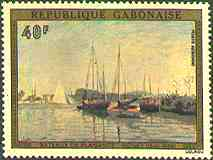 |
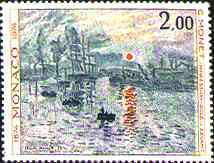 |
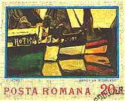 |
Working in the open air, Monet painted simple landscapes and scenes of contemporary middle-class society, and he began to have some success at official exhibitions. As his style developed, however, Monet violated one traditional artistic convention after another in the interest of direct artistic expression.
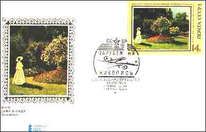 |
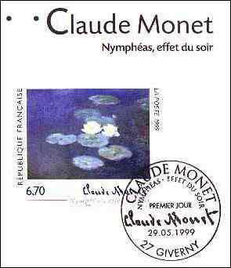 |
In 1874 Monet and his colleagues decided to appeal directly to the public by organizing their own exhibition. They called themselves independents, but the press soon derisively labelled them Impressionists because their work seemed sketchy and unfinished (like a first impression) and because one of Monet's paintings had borne the title Impression: Rising Sun (1872, Musée Marmottan, Paris - see above the Monaco stamp). Monet's compositions from this time are extremely loosely structured, and the colour was applied in strong, distinct strokes as if no reworking of the pigment had been attempted.
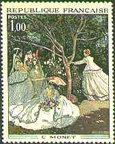 |
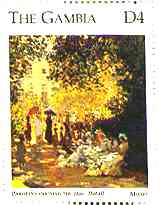 |
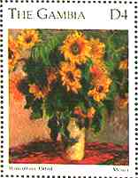 |
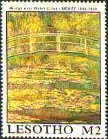 |
By the mid-1880s Monet, generally regarded as the leader of the Impressionist school, had achieved significant recognition and financial security. Despite the boldness of his colour and the extreme simplicity of his compositions, he was recognized as a master of meticulous observation, an artist who sacrificed neither the true complexities of nature nor the intensity of his own feelings. In 1890 he was able to purchase some property in the village of Giverny, not far from Paris, and there he began to construct a water garden (now open to the public)-a lily pond arched with a Japanese bridge and overhung with willows and clumps of bamboo.
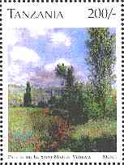 |
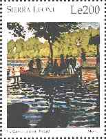 |
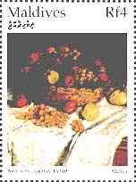 |
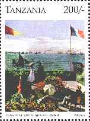 |
Beginning in 1906, paintings of the pond and the waterlilies occupied him for the remainder of his life; they hang in the Orangerie, Paris; the Art Institute of Chicago; and the Museum of Modern Art in New York. Throughout these years he also worked on his other celebrated "series" paintings, groups of works representing the same subject-haystacks, poplars, Rouen Cathedral, the Seine River-seen in varying light, at different times of the day or seasons of the year. Despite failing eyesight, Monet continued to paint almost up to the time of his death, on December 5, 1926, at Giverny. (After Microsoft Encarta 1996).
Background: Claude Monet,
Poplars on the Epte, 1891. The Tate Gallery, London.
(For more information about the works of art
displayed please point the stamps with the mouse index.)

| Revised: 07/03/00. Copyright © 1999 -2000 by Victor Manta, Switzerland. All rights reserved in all countries. |
|